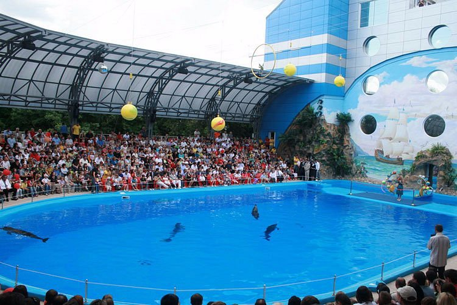

Charchiv
Charkiv werd in 1654 gesticht door kozakken, die onder leiding van Bogdan Chmielnicki in opstand waren gekomen tegen het Poolse bewind.
- Ze plaatsten zich onder bescherming van tsarina Catharina de Grote, en in 1667 werd het oostelijk deel met Charkiv als hoofdstad overgedragen aan Rusland.
- n 1805 kreeg de stad een universiteit. Van 1917 tot 1934 was het de hoofdstad van de Oekraïense SSR, totdat Kyiv deze functie overnam.
- Tijdens de Russische invasie van Oekraïne in 2022 werd de Slag om Charkov geleverd. Russische eenheden wisten delen van de stad te veroveren en een groot deel van het culturele centrum en omringende woonwijken werden getroffen door Russische raketaanvallen

Bezinswaardigheid
- Shevchenko City Garden
- Gorky Central Park of Culture and Leisure
- Kharkiv Zoo
- Mirror Stream fountain
- Annunciation Cathedral
Lokale activiteit
Kharkov Dolphinarium 